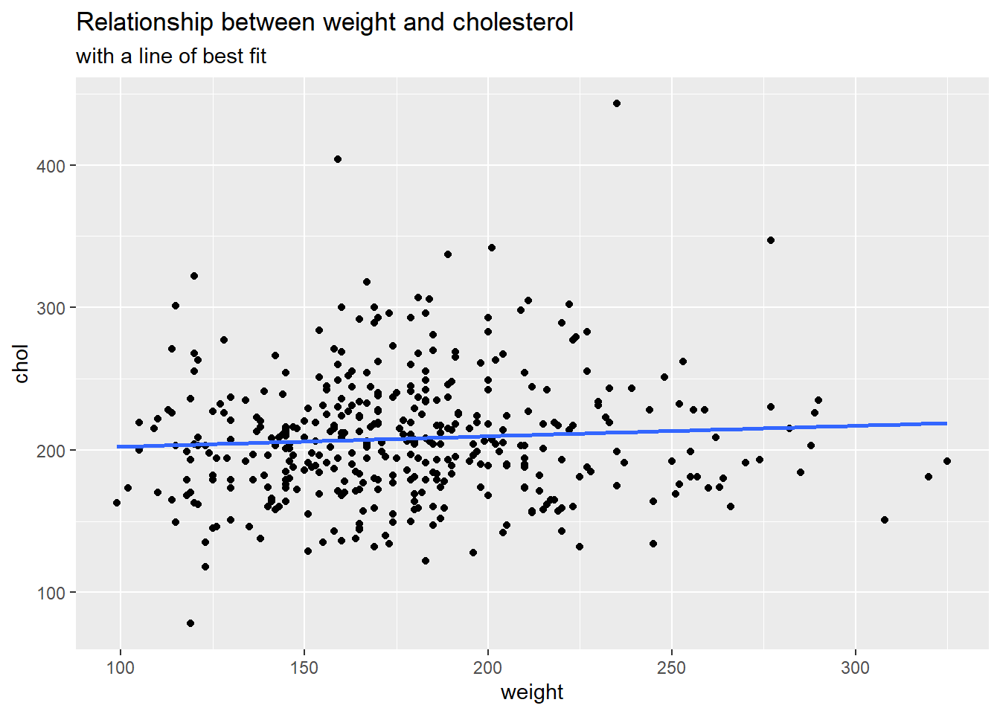

Predicting cholesterol with simple linear regression
Modeling Inference
Data Science with R
Getting Started
Programming exercises are designed to provide an opportunity for you to put what you learn in the videos and readings. These exercises feature interactive code cells which allow you to write, edit, and run R code without leaving your browser.
When the ▶️ Run Code button turns to a solid color (with no flashing bubble indicating that the document is still loading), you can interact with the code cells!
We invite you to think critically about the ethics questions associated with each graph before opening the solution box so you get the most out of this exercise.
Packages
We’ll use the tidyverse and tidymodels for this programming exercise. These are already installed for you to use!
Motivation
It’s important to learn statistical modeling, as it provides us the tools necessary to answer complex questions in a responsible, insightful manner.
In this programming exercise, we are going to be working with data that were published in the Preventive Medicine journal in 1997 (Schorling et al. 1997). In this dataset, 403 African Americans were interviewed in a study to understand the prevalence of obesity, diabetes, and other cardiovascular risk factors in central Virginia. We will fit simple linear regression models with different types of predictors to help best understand total cholesterol. Please read the data in below.
Data
The original data for this exercise are located in the faraway package, but for this exercise you will load the data from a CSV file.
The data dictionary below shows the subset of variables we are going to work with for this exercise.
| Variable Name | Description |
|---|---|
| chol | Total cholesterol |
| weight | Weight in pounds |
| frame | Factor with levels small, medium, large |
Now, let’s explore these data!
Exploratory data analysis
Before we fit a linear regression model, we are going to explore the data. Let’ start with exploring our response variable of interest, cholesterol (chol). Find the mean and sd of the variable chol below. Note: the variable chol does have missing values.
CautionHint
Think about the following code structure below, and what you want to be taking the mean of!
cholesterol |>
summarize(
mean = mean(___, na.rm = ___),
sd = sd(___, na.rm = ___)
)
TipSolution
Next, let’s create a histogram of our response. What is the shape of the distribution?
CautionHint
cholesterol |>
ggplot(
aes(x = ___)
) +
geom______()
TipSolution
cholesterol |>
ggplot(
aes(x = chol)
) +
geom_histogram() +
labs(title = "Histogram of Cholesterol")`stat_bin()` using `bins = 30`. Pick better value with `binwidth`.Warning: Removed 1 row containing non-finite outside the scale range
(`stat_bin()`).The distribution of cholesterol responses is roughly symmetric, with a couple additional observations out on the right tail.
Question of interest
Now, we are going to explore the relationship between weight, and an individual’s cholesterol. For this exercise, cholesterol (chol) is going to be our response, and our explanatory variable is going to be weight (weight).
First, let’s create a scatterplot between cholesterol and weight. We also want to fit a least squares simple linear regression line through our data. Once we create the plot, what can we say about the relationship?
CautionHint
cholesterol |>
ggplot(
aes(x = ___, y = ____)
) +
geom______() +
geom______(method = "lm", se = F)
TipSolution
ggplot(cholesterol, aes(x = weight, y = chol)) +
geom_point() +
geom_smooth(method = "lm", se = F) +
labs(
title = "Relationship between weight and cholesterol",
subtitle = "with a line of best fit"
)`geom_smooth()` using formula = 'y ~ x'Warning: Removed 2 rows containing non-finite outside the scale range
(`stat_smooth()`).Warning: Removed 2 rows containing missing values or values outside the scale range
(`geom_point()`).
It appears that the relationship between weight and cholesterol is slightly positive. That is, as someone’s weight increases, on average, their cholesterol increases according to these data.
Estimating the line of best fit
Now, let’s use R to calculate the coefficients associated with the line of best fit your created above. The R code below uses tidymodels to specify a linear regression model with cholesterol as the response, and weight as the explanatory variable from the cholesterol data set.
lm_fit <- linear_reg() |>
fit(chol ~ weight, data = cholesterol)| term | estimate |
|---|---|
| (Intercept) | 194.986 |
| weight | 0.074 |
How would you interpret the intercept?
How would you interpret the weight coefficient?
TipSolution
Intercept: For a person who weighs 0 pounds, we would estimate their mean cholesterol to be 194.986 milligrams per deciliter.
Weight: For a one pound increase in a person, we estimate on average, a 0.074 milligrams per deciliter increase in their cholesterol.
Outliers
We are going to investigate how adding outliers influences the line of best fit. First, we want you to:
Create a new observation that has a value of 200 pounds, and a cholesterol value of 600.
Create a new observation that has a value of 500 pounds, and a cholesterol value of 600.
We are going to re-estimate our line of best fit for each of these added observations. To create a new observation, please fill in the ____ with the appropriate values. Next, add this value to the exsisting data set using the bind_rows() function.
Now, re-run the following code below to see how your line has changed from above. Try this activity with at least our two suggested new observations. You are encouraged to explore more!
TipTakeaways
Outliers that are more towards the middle of the data have less influence on the estimated slope coefficient
Outliers that are more towards the ends of the data have higher influence of the estimated slope coefficient
Modeling with a categorical variable
Simple linear regression is not limited to using a single quantitative explanatory variable. We can also use a categorical variable. In this exercise, we are going to model our response variable cholesterol by a person’s frame.
Fit the appropriate simple linear regression model, and produce the estimates for the model.
Why do you have a negative estimate?
TipSolution
lm_fit <- linear_reg() |>
fit(chol ~ frame, data = cholesterol)
tidy(lm_fit) |>
select(term, estimate) |>
kable(digits = 3)| term | estimate |
|---|---|
| (Intercept) | 208.000 |
| framemedium | 5.538 |
| framesmall | -10.505 |
Some estimates are small because the estimates that are associated with levels of the categorical variable frame are deviations from the baseline group! Notice how we see estimates for medium and large, but not small. Small has been chosen to be the baseline group, and the other estimates are deviations from the baseline.
When working with a single categorical variable, the estimates for cholesterol correspond to the sample mean cholesterol for each group!
To verify this, please see the calculate the sample mean cholesterol for each frame group below, and relate these sample means to the deviations from the baseline above.
TipSolution
Our baseline estimated mean cholesterol for someone with a small frame is ~ 197 in both summary outputs. The baseline deviation for the medium group is 16.043. The calculated sample mean cholesterol for someone with a medium build is ~214, which is roughly 16 units away (not exact due to rounding). This relationship holds for the large frame group as well.
With this information in-mind, what is the appropriate interpretation for the 16.403 estimate?
TipSolution
For someone with a medium frame, we estimate on average a 16.043 increase in cholesterol from those who have a small frame.
Summary
Simple linear regression can be used when our response variable is quantitative, and we have a single explanatory variable.
Outliers have the ability to drastically influence our line of best fit.
References
Schorling, John B., Julienne Roach, Marjorie Siegel, Natalie Baturka, Dawn E. Hunt, Thomas M. Guterbock, and Herbert L. Stewart. 1997. “A Trial of Church-Based Smoking Cessation Interventions for Rural African Americans.” Preventive Medicine 26 (1): 92–101. https://doi.org/10.1006/pmed.1996.9988.